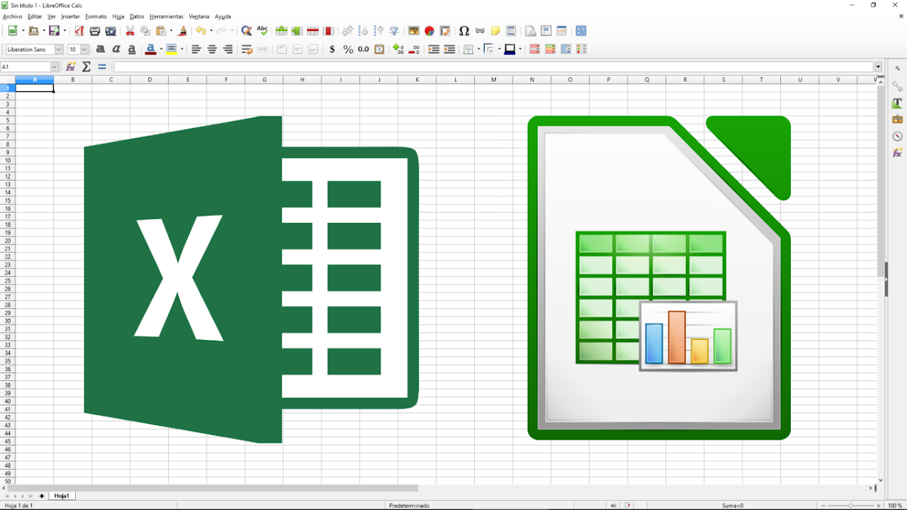
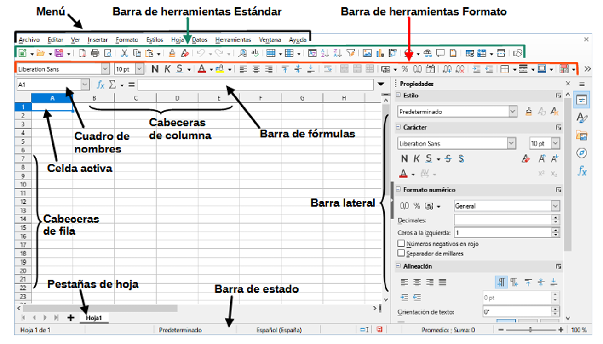
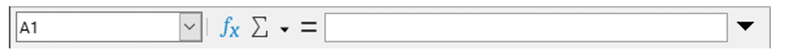
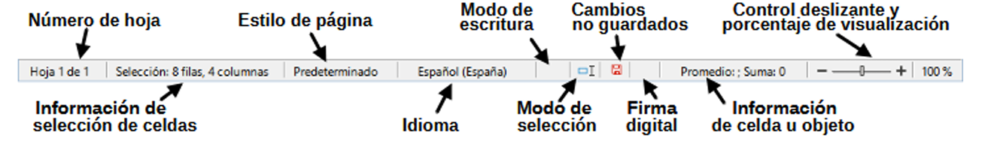
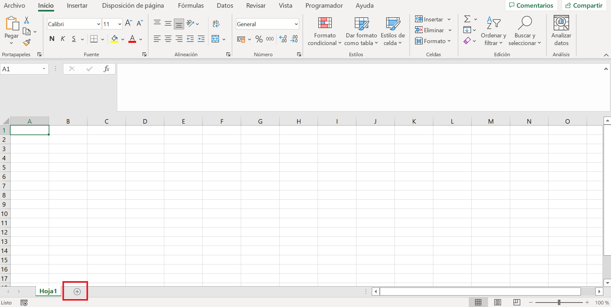
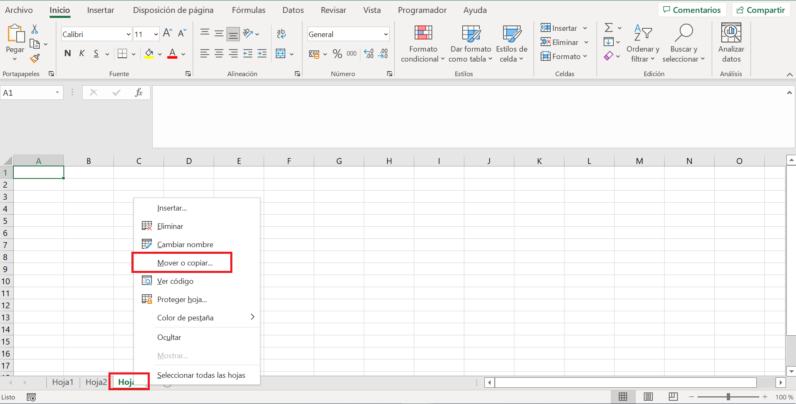
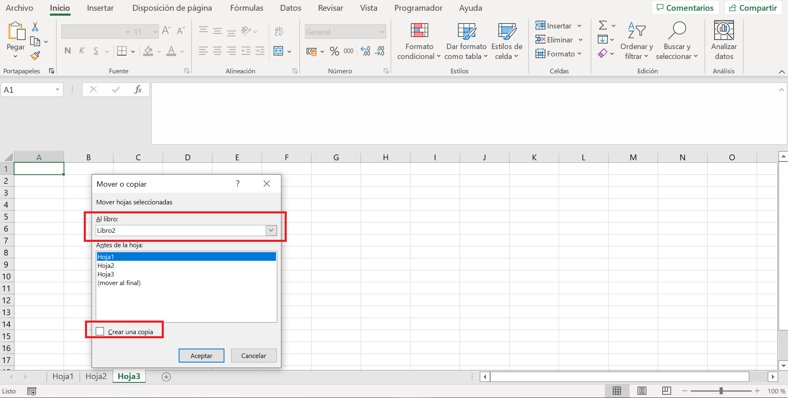
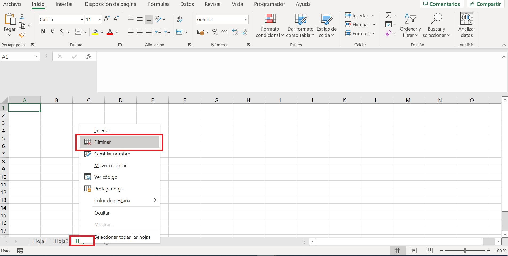
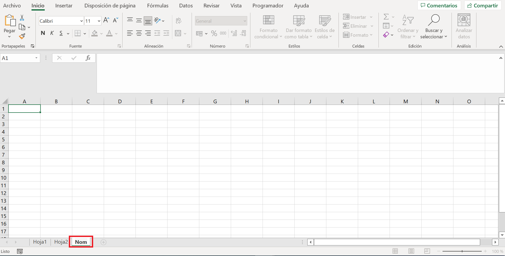

Hoja de calculo¶
Hoja de calculo¶
- ¿Sabes qué es una hoja de cálculo?
- ¿Para qué sirven?
La hoja de cálculo es una herramienta poderosa para la manipulación numérica. Actualmente está teniendo un gran auge al utilizarse como gestor de bases de datos online.
En este apartado vamos a estudiar ciertos aspectos de la hoja de cálculo y su uso como base de datos.
En algunas la mayoría de las empresas, se tiene que operar con una gran cantidad de números (Cálculos de mediciones, contabilidad, cuentas bancarias, etc.), por lo que se utiliza mucho la hoja de cálculo.
Una hoja de cálculo es un programa informático que sirve para organizar gran cantidad de datos y números en tablas y operar con ellos, también disponen de creación de gráficos, inserción de imágenes, etc.
Hoy en día, la hoja de cálculo más conocida es la de Microsoft Office - Excel.
También se utiliza mucho la hoja de cálculo de la suite LibreOffice - Calc, que es totalmente compatible con la de Microsoft y además gratuita.

Dentro de la suite de Google, tenemos la hoja de cálculo de Google Sheets, que además de ser gratuita, tiene la ventaja de ser completamente on-line, por lo que está siendo muy utilizada tanto en el ámbito educativo como empresarial.
Presenta varias ventajas, la primera es que no necesita ser instalada, por lo que no ocupa espacio en nuestro dispositivo, siendo multiplataforma, ya que solo es necesario un navegador de Internet para ejecutarla.
Además, permite abrir, editar y guardar hojas de cálculo de Excel (.xlsx) y Calc (.ods).
Otra ventaja es que permite el trabajo cooperativo, pudiendo varias personas trabajar en un mismo documento simultáneamente.
Google Sheets también puede ser instalado en Windows, Mac OS, tablets y teléfonos móviles.
En este tema estudiaremos la hoja de cálculo de LibreOffice - Calc, todo lo que aprendamos es trasladable a las demás hojas de cálculo.
Primeros pasos con Calc¶
Abrir Calc¶
Primero abrimos LibreOffice Calc pulsando en el icono de la aplicación.
También podemos escribir la palabra "calc" en el botón de inicio de LLiurex y pulsar en LibreOffice Calc.
Ventana principal¶
Se abrirá la ventana de LibreOffice Calc con el siguiente aspecto.

Las partes principales de la ventana principal, son las siguientes:
- La barra de título, se encuentra en la parte superior, muestra el nombre del libro de cálculo actual. Cuando se crea un libro de cálculo nuevo, su nombre es Sin título X, donde X es un número. Al guardar un libro de cálculo por primera vez, se le solicitará que le asigne un nombre.
- Los menús son similares a los de cualquier procesador de textos.
- La barra de herramientas es similar a la de cualquier hoja de cálculo y contiene las funciones más comunes, que también se encuentran en los menús.
-
La barra de fórmulas nos permite introducir contenido en las celdas.

Barra de fórmulas De izquierda a derecha, la Barra de fórmulas tiene varios elementos importantes:
-
Cuadro de nombres
Muestra la referencia de la celda seleccionada, por ejemplo A1.
- La letra indica la columna.
- El número indica la fila.
También puedes escribir aquí una celda o un nombre de rango para ir directamente a ella. -
Asistente de funciones
Abre una ventana con una lista de funciones y fórmulas que puedes usar.
Es útil porque te muestra cómo se construye cada función paso a paso. -
Seleccionar función (Σ)
Permite hacer cálculos rápidos como SUMA, PROMEDIO, MÍN, MÁX, RECUENTO, PRODUCTO, etc.
El cálculo se aplica a los números que están encima o a la izquierda de la celda seleccionada. -
Fórmula (=)
Inserta el signo igual (=) para empezar a escribir una fórmula en la celda seleccionada. -
Línea de entrada
Muestra el contenido de la celda (texto, número o fórmula) y permite editarlo directamente.
Si la fórmula es muy larga, puedes ampliar la barra arrastrando hacia abajo para tener más espacio.
-
-
El espacio de edición de la hoja de cálculo consiste en varios rectángulos vacíos llamados celdas.
- La barra de estado muestra información sobre la hoja de cálculo y permite acceder rápidamente a algunas de sus características.

Barra de estado
Guardar documentos de Calc¶
Para guardar documentos de calc debemos ir a Archivo > Guardar o hacer clic sobre el icono Guardar en la barra de herramientas o mediante la combinación de teclas Ctrl+Mayús+S En cualquier caso, el documento se salvará en el formato predeterminado (Open Document Format) (*.ods).
Haciendo clic en el icono Exportar en la barra de herramientas podemos salvar el documento en formato (*.pdf).
Actividad
📝 AA3.1 Introducción a las hojas de cálculo¶
(C.ESP2 / CE2.3 / IC1-3p)
- ¿Qué es una hoja de cálculo?.
- ¿Qué se puede hacer con una hoja de cálculo?.
- Abre una hoja de cálculo nueva. Dibuja la ventana que aparece y señala sus partes principales.
Hojas¶
En una hoja de cálculo, cada archivo o libro puede contener varias hojas. Estas hojas se muestran en pestañas en la parte inferior del área de trabajo y permiten organizar los datos en diferentes espacios dentro del mismo documento.
Las operaciones básicas que podemos realizar sobre las hojas son:
Agregar¶
Para agregar una hoja de cálculo, haz clic en el botón de agregar

Seleccionar¶
Para seleccionar hojas tenemos tres causísticas:
- Para seleccionar una sola hoja, haz clic sobre su pestaña.
- Para seleccionar varias hojas consecutivas, haz clic en la primera y, manteniendo pulsada la tecla Mayús (Shift), haz clic en la última.
- Para seleccionar varias hojas no consecutivas, haz clic en la primera y, manteniendo pulsada la tecla Ctrl, selecciona las demás.
- Las hojas seleccionadas se resaltarán y cualquier acción (por ejemplo, formato o eliminación) afectará a todas ellas a la vez.
Copiar o mover¶
Para copiar o mover una hoja existente, únicamente con seleccionar la hoja que se quiere copiar o mover y dar con el botón derecho y seleccionar “Mover o copiar..”

Y se abrirá una nueva ventana con diferentes opciones: Mover al final o crear una copia. Lo primero será seleccionar el libro donde se quiere mover o hacer la copia. Después se puede apretar a mover al final o seleccionar crear una copia dependiendo de lo que se quiera realizar.

Eliminar¶
Para eliminar una hoja, selecciona la hoja que se quiere eliminar y presionar el botón derecho y la opción “Eliminar”.

Cambiar nombre¶
- Para cambiar el nombre de una hoja, situarse sobre el nombre y pulsar doble clic.

Actividad
📝 AA3.2 Selección de hojas¶
(C.ESP2 / CE2.3 / IC1-3p)
- Crea un nuevo documento en Calc.
- Añade tres hojas y cámbiales el nombre a: “Hoja_ventas”, “Hoja_compras” y “Hoja_clientes”.
- Selecciona las tres hojas a la vez y cambia el color de las pestañas.
- Guarda la hoja en formato pdf.
Referencias¶
- Guía LibreOffice Calc 7.5